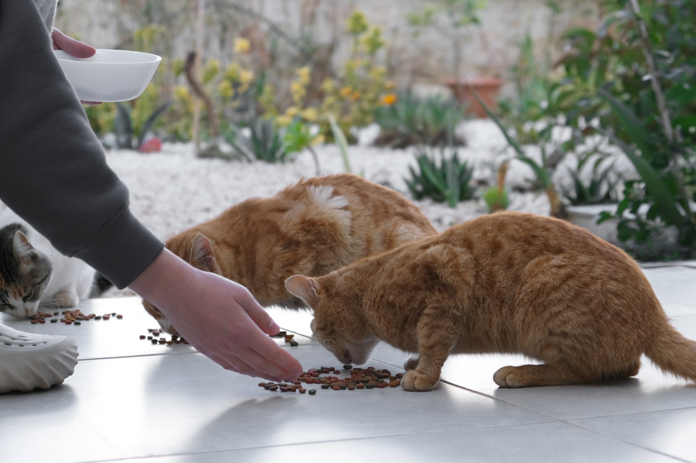

catadoption_pune
catadoption_pune

Feeding community animals is allowed in India. For dogs, since August 2025, the Supreme Court allows it only at designated spots, not on the street. Eight steps, in order.
1 · Inform the Municipal Authority
Write a simple letter or email to your Municipal Authority asking them to fix designated feeding spots in your area. Keep a copy of the letter with you: it matters in step 5.
2 · Choose safe spots
Pick places away from children's play areas, footpaths, and busy roads. Not inside schools, hospitals, bus or train stations, parks or religious places: dogs are being moved out of these.
3 · Use a designated spot
If there's none near you, ask your municipal corporation's veterinary department for one (step 1). Inside a housing society, the spots are agreed between the residents' association and the residents who feed (ABC Rule 20).
4 · Multiple spots may be needed
The number of spots should match the number of dogs in the area (ABC Rule 20, and the Supreme Court since August 2025). There can be more than one, so dogs don't gather in large numbers and fight.
5 · If someone stops you
Show them the copy of your letter to the Municipal Authority. Request them to also write to the Authority to fix feeding spots soon. Feeding outside designated spots can now be reported to the municipality and acted on.
6 · Keep the rules with you
Carry a copy of Rule 20 of the Animal Birth Control (ABC) Rules: it covers feeding of community animals.
7 · Be polite and respectful
Care for animals with kindness, and respect the people around you too. Feeders represent every feeder.
8 · Report violence immediately
If anyone hurts or threatens you for feeding, report it to the police. Relevant Bharatiya Nyaya Sanhita (BNS) sections:
Hurt: 115 (serious injury: 117) · Blocking your way: 126 · Assault or force: 131 · Threats: 351 · Insults: 352 · Harming the animal: 325
Cats too?
The Supreme Court's 2025–26 orders are about dogs only. ABC Rule 20 on feeding covers all community animals, cats too. Cruelty to any animal is an offence under the Prevention of Cruelty to Animals Act, 1960, and compassion for living creatures is every citizen's duty (Article 51A(g) of the Constitution).
We're volunteers, not lawyers; this is practical guidance gathered by our feeder community. For legal help, see the contacts on our Emergency page.
Sources
- Supreme Court, 22 Aug 2025: order (PDF)
- Supreme Court, 7 Nov 2025: order (PDF, hosted by Down To Earth)
- Supreme Court, 19 May 2026, final judgment: judgment (PDF)
- Animal Birth Control Rules, 2023: gazette (PDF)
- Bharatiya Nyaya Sanhita, 2023: text (PDF)
Questions? DM us.
We're @catadoption_pune on Instagram. Share this page with a feeder who needs it.